The feel
Everything in the world is a character on a grid. Rogue's screen was meant to replace the "You can see ..." descriptions of other fantasy games: you are the @, the walls are dashes and bars, and the inhabitants of the dungeon are capital letters.1 In a traditional roguelike the same glyphs spell out the messages and draw the map and everything on it, which blurs the line between a font and a set of sprites.2 As Cogmind's developer puts it, "the text is the graphics".3
The player's imagination finishes the picture. Tarn Adams describes Dwarf Fortress fans who like that "a dragon is a capital D, because then they can imagine the dragon", and points out that drawn tiles hand that job to the artist.4 Gabriel Santos built Stone Story RPG on the brain's ability to fill in missing information, and finds the abstraction powerful because each player fills the gaps with something personal.5
- abstract
- symbolic
- terse
- dense
- imagined
- keyboard-driven
Where it comes from
ASCII, a seven-bit code with room for 128 characters, became an American standard on 17 June 1963, and IBM's first PC brought an extended set of 256 in 1981.6 Around 1980 at UC Berkeley, Ken Arnold's curses library let a program put a character anywhere on a terminal screen, and Michael Toy and Glenn Wichman used it to make Rogue, with letters, numbers and symbols standing in for pictures; once BSD UNIX 4.2 included it, the game reached universities around the world.7 When Rogue appeared its screen was almost unique among fantasy games; by NetHack's account the screen has since become the norm, a tradition NetHack continues.8 Tarn and Zach Adams released Dwarf Fortress in ASCII in August 2006,9,4 and the Museum of Modern Art, which holds it, notes that its developers purposely passed over later developments in computer graphics.10
Core elements
One character per cell
Everything sits on a fixed grid, one character to a cell. Rogue needed a screen of at least 24 lines by 80 columns,1 and the early roguelikes expected an 80 by 25 console window.2 Each cell holds a glyph, a foreground colour and a background colour.11
The player as an @
You are the @. Rogue's manual opens its list of symbols with it: "This symbol represents you, the adventurer".1 NetHack keeps it for your character, with . for floors, # for corridors, and < and > for the stairs.8
Letters for creatures
Creatures are letters. In Rogue the capitals A to Z are the inhabitants of the dungeon.1 Dwarf Fortress gives a creature its first letter, in capitals for big ones,9 so a goose, a goblin and a gremlin all share a lowercase g.4 Other games letter by category instead, such as c for canine and z for undead.2
Sixteen text colours
Classic PC text mode offered 16 colours, built from one bit each of red, green, blue and intensity, with dim yellow turned into brown,12 and Tarn Adams had only those 16 for Dwarf Fortress before its tile version.4 Colour carries meaning: Dwarf Fortress tells its g creatures apart by slightly different whites,4 and in a traditional roguelike the palette is the first thing a viewer notices.2
Box lines and blocks
Walls, frames and pictures come from the extended character set. The standard code page 437 font has 256 glyphs,11 games such as Dwarf Fortress use its layout,3 and its single and double lines join up into map walls and boxes.11 Unicode keeps these box-drawing characters for compatibility with the character cell graphics of the years before 1990.13 For a gradient, ANSI artists use the half-shade ▒ and tune its foreground and background colours until the steps look smooth.12
Field of view and memory
The map shows only what the @ has seen. Rogue keeps a map of where you have been and what you have seen, and it grows as you explore.1 Most roguelikes limit sight to a range around the character, and one tutorial draws the tiles seen earlier differently from those in view.14 Brogue adds colour and dynamic lighting to the same ASCII characters.15
How to do it
Set up the grid
Plan the screen in character cells, at least 80 columns by 24 lines. Keep the top line for messages, the bottom two for status, and a 21 by 80 map between them.8 For the PC look, use a 9 by 16 cell like IBM's VGA font: VGA text mode ran at 720 by 400 on a 4:3 monitor,16 room for an 80 by 25 console.2
Pick the cell shape
Square cells keep horizontal and vertical distances equal on screen and in the game, which makes a tactical map easier to read, but square letters slow reading: the eye has to move 50% faster along each line.2 One answer is two fonts on one grid, a square map font and a text font exactly half as wide, such as 12 by 12 and 6 by 12.2 At 1366 by 768, 12 by 12 is the largest square font that fits an 80 by 60 grid.2
Draw the font as one bitmap
Draw every glyph into a single image, laid out on a grid in code page 437 order, so the game can copy each character into place and tint it any colour.3 Build the letter and line spacing into each cell, because a grid has no kerning, and treat the font as pixel art.3 Keep 1, l and I distinct, and O apart from 0, since a symbol on the map has no word around it to help.2
Give each thing one symbol
Give every kind of thing a symbol and keep it: @ for the player, . for floor, # for corridors, < and > for stairs, ) for weapons, [ for armour, ! for potions, ? for scrolls and $ for gold.8 Use letters for creatures, capitals for big ones, and colour to separate creatures that share a letter.9,4 Let players ask: NetHack's / command tells you what any symbol on the map is.8
Start from sixteen colours
Start from the 16 colours that PC text mode kept as its defaults: #000000, #0000AA, #00AA00, #00AAAA, #AA0000, #AA00AA, #AA5500 and #AAAAAA, then the bright set #555555, #5555FF, #55FF55, #55FFFF, #FF5555, #FF55FF, #FFFF55 and #FFFFFF.12 These values follow how later PCs and emulators show them; in this set red and brown are often hard to tell apart, while IBM's own 5153 CGA monitor separated them more.12
Add field of view
Each turn, work out which cells the @ can see, for example by shadowcasting; a symmetric version guarantees that if floor tile A can see B, then B can see A.17 One tutorial uses a sight radius of 8, gives floors in view a background of (200, 180, 50), remembered floors (50, 50, 150), and draws unexplored cells as blank black.14
Draw pictures with characters
For pictures, use a square art font with the full code page 437 set. Cogmind's art is drawn at 12 by 12, and every other font size is drawn to the same proportions so the art looks the same.18 To animate, work as in any other medium: gather references, set the key poses, decide how long each animation runs, then go frame by frame.5 Stone Story RPG's more than 10,000 frames were typed into plain text files.5
Cheat sheet
Do
- Fill a bigger screen by swapping in a larger font bitmap, and letterbox the few pixels left over.2
- Use a square font for the map and a narrower one for text, so both read well.2
- Draw the # of the walls with thin lines, so walls don't pull the eye away from creatures and items.18
- Offer several fonts and sizes, because eyesight, light and monitors differ from player to player.2
- Let sound add the detail the characters leave out, as Stone Story RPG does.5
Avoid
- Scaling the whole window. Cogmind's developer draws a font for every size because scaling looks awful.18
- Decorative fantasy lettering on the map. A stylised letter takes an extra moment to recognise when it stands alone.2
- Colour as the only difference. Dwarf Fortress's goblin and goose are both a g in slightly different whites, and players who can't see colour can't tell them apart.4
- One symbol for too many things. Dwarf Fortress uses its six-pointed star for a turtle, a campfire, a gem and, by Adams's count, about 15 objects in all.4
- Darker shades as the only cue for depth. With 16 colours there is only one darker green, so Adams could not shade lower levels darker without them clashing with the dark greens above and leaving players unable to tell up from down.4
Tools and tutorials
- REXPaint
An ASCII art editor: glyph, foreground and background are set separately in each cell, and single and double lines join up by themselves.11
- The Ultimate Oldschool PC Font Pack
Remakes of PC text-mode fonts, IBM VGA 9x16 among them, with aspect-correct versions.16
- Roguelike Tutorials
Build a roguelike in Python step by step. Part 4 adds field of view.14
- Symmetric Shadowcasting
Albert Ford's interactive walk-through of a field-of-view algorithm, with the full code.17
- libtcod
A roguelike library that uses square fonts by default and is one of the main tools for new developers.2
- Playscii
A program for drawing and animating ASCII art.
Palette
Screen black, text grey, fortress yellow, river teal, tree green and glyph red are pixel values from the Dwarf Fortress fortress in the first image, which uses its own set of 16 colours rather than the PC values in the how-to. Firebolt and cave indigo come from Brogue's lit cave.
Feel the vibe
In motion
Listen
One unhurried guitar, good company for hours of reading a map made of letters.
YouTubeStrange and warm, a match for a world told mostly in words.
YouTubeSlow and sparse, like a world drawn in single strokes of text.
YouTubeQuick, bright tracker music, for an evening of filling a screen with blocks and shades.
YouTubeGentle fantasy for wandering between the # walls of a classic dungeon.
YouTube
More references
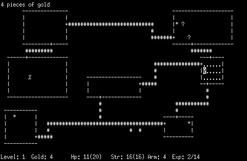
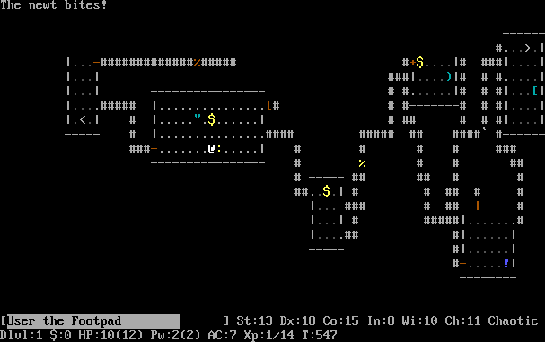
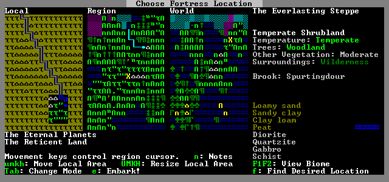
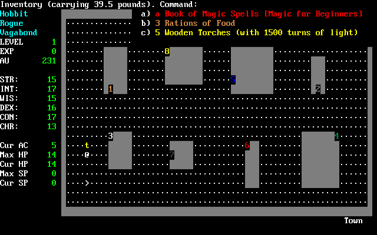
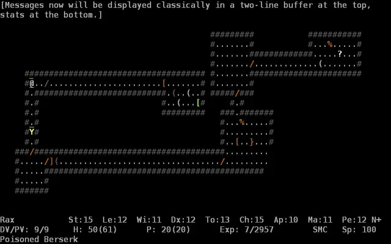
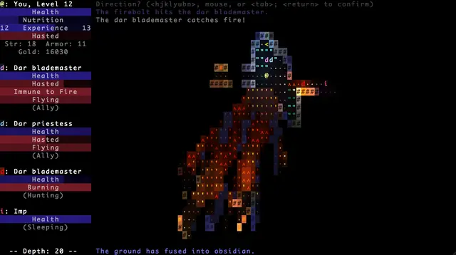
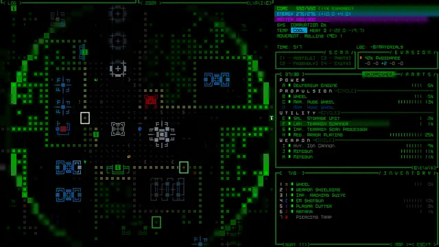
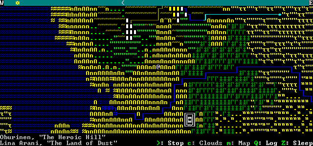
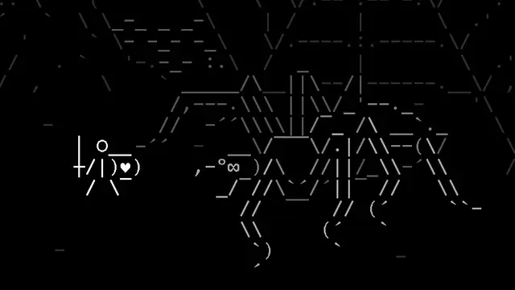
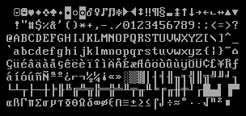
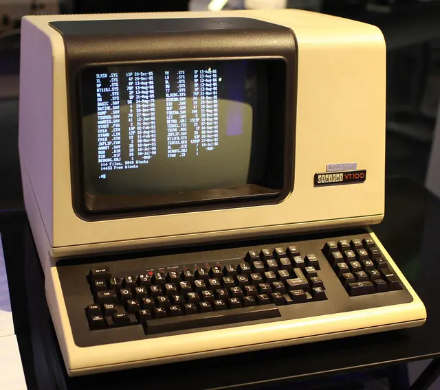
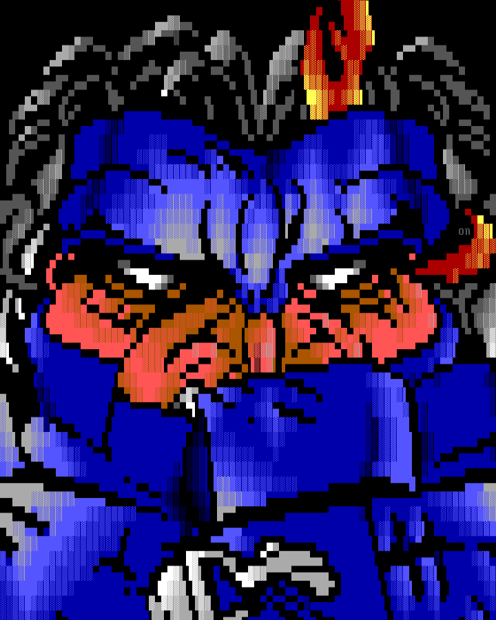
Games
- Rogue
The template: you are the @, the capitals are monsters, and the map fills in as you explore.1
- NetHack
Study its full symbol list, the message line at the top and the two status lines at the bottom.8
- ZZT
Study how the editor's built-in items, creatures and terrain fill each board with text graphics, around a player drawn as a white smiley face on blue.19
- Dwarf Fortress
Study how first letters, capitals and colour carry a whole simulated world.9 The Steam version has a Classic mode that switches back to glyphs.20
- Brogue
Plain ASCII with colour and dynamic lighting. Study its lakes, swamps and lava fields.15
- Caves of Qud
Study its text look as of 2014: a science fantasy world set in a serifed, non-square font.2,21 Its first beta came out in 2010 and Early Access in 2015.21
- Candy Box!
Study how a browser game builds its candy merchants and its quests through peaceful forests out of ASCII art.22 Seeing it started Stone Story RPG's ASCII look.5
- Cogmind
Square map font, half-width text font, and art drawn from code page 437.18
- Stone Story RPG
More than 10,000 frames of ASCII animation. It was planned as black on white until players' feedback reversed it.5
Film, art and more
- ANSI art
Study how ANSI artists blend the half-shade character's foreground and background colours into smooth gradients.12 Art editors such as REXPaint still import and export its .ANS files.11
- ASCII History of Moving Images
Study how seven film and television clips, from the Lumière brothers to Psycho, play as green ASCII characters on a black screen.23
- Star Wars Asciimation
Study its frames: 67 columns by 14 rows, played at 15 frames per second and grouped into shots like any film.24
Sources
- 1A Guide to the Dungeons of Doom
- 2Fonts in Roguelikes
- 3Font Creation
- 4'Dwarf Fortress' Is Abandoning Its Text-Based Graphics, but Not Its Soul
- 5Road to the IGF: Martian Rex & standardcombo's Stone Story RPG
- 6ASCII
- 7A Brief History of "Rogue"
- 8A Guide to the Mazes of Menace: Guidebook for NetHack 3.6
- 9Interview: The Making Of Dwarf Fortress
- 10Tarn Adams, Zach Adams. Dwarf Fortress. 2006
- 11REXPaint v1.70 Manual
- 12The IBM 5153's True CGA Palette and Color Output
- 13Box Drawing, Range 2500–257F (code chart)
- 14Part 4: Field of View
- 15Confessions of a Brogue junkie
- 16The Ultimate Oldschool PC Font Pack (v2.2): Documentation
- 17Symmetric Shadowcasting
- 18Cogmind Fonts
- 19What is ZZT and why is it still in use 30 years after release?
- 20Classic Mode is here! + The Team Grows
- 21Caves of Qud press kit
- 22Candies is an ASCII browser game about questing and candy
- 23Vuk Ćosić: ASCII History of Moving Images
- 24Star Wars Asciimation FAQ